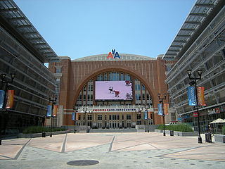

Team and Arena Information
Dallas Stars

The Dallas Stars are a professional ice hockey team based in Dallas, Texas. They are members of the Central Division of the Western Conference of the National Hockey League (NHL). The team was founded during the 1967 NHL expansion as the Minnesota North Stars, based in Bloomington, Minnesota. Before the beginning of the 1978–79 NHL season, the team merged with the Cleveland Barons after the league granted them permission due to each team's respective financial struggles. Ultimately, the franchise relocated to Dallas for the 1993–94 NHL season. The Stars played out of Reunion Arena from their relocation until 2001, when the team moved less than 1.5 miles into the American Airlines Center.
The Stars have won seven division titles in Dallas, two President's Trophies as the top regular season team in the NHL, the Western Conference championship twice, and in 1998–99, the Stanley Cup. (The Dallas Stars became the first NHL team based in a sub tropical city, from the 35th parallel north to win a Stanley Cup.) Joe Nieuwendyk won the Conn Smythe Trophy as the most valuable player of the playoffs that year.
In 2000, Neal Broten was inducted into the United States Hockey Hall of Fame. In 2009, Brett Hull became the first Dallas Stars player inducted into the Hockey Hall of Fame, followed by Ed Belfour and Joe Nieuwendyk in 2011. In 2010, brothers Derian and Kevin Hatcher were inducted to the United States Hockey Hall of Fame.
American Airlines Center
The American Airlines Center (AAC) is a multi-purpose arena, located in the Victory Park neighborhood, near downtown Dallas, Texas.
The venue serves as the home to the Dallas Mavericks of the National Basketball Association, and the Dallas Stars of the National Hockey League. The arena is also used for concerts and other live entertainment. It opened in 2001 at a cost of $420 million.
Principal design work was carried out by David M. Schwarz Architectural Services of Washington D.C. American Airlines Center was designed to be the heart of a new urban, commercial area designed to reinvigorate the city of Dallas called Victory Park. The facility itself features a conservative, traditional design with sweeping brick façades and smooth arches, and has been graced with a number of awards (below). The interior includes retractable seating, public art and a state-of-the-art technological arena. Because of the Quonset hut-like appearance of its roof and the fact that American Airlines holds the naming rights some fans have come to refer to it as "The Hangar".
On the south side of the arena AT&T Plaza (also called Victory Plaza) serves as the principal entrance into the facility, designed by artist Athena Tacha in 2000. The plaza provides an open space with fountains flanked by retail and office buildings. With several high-definition video displays from Daktronics mounted on the side of the arena and office buildings, the plaza is often used for outdoor events and movie showings.